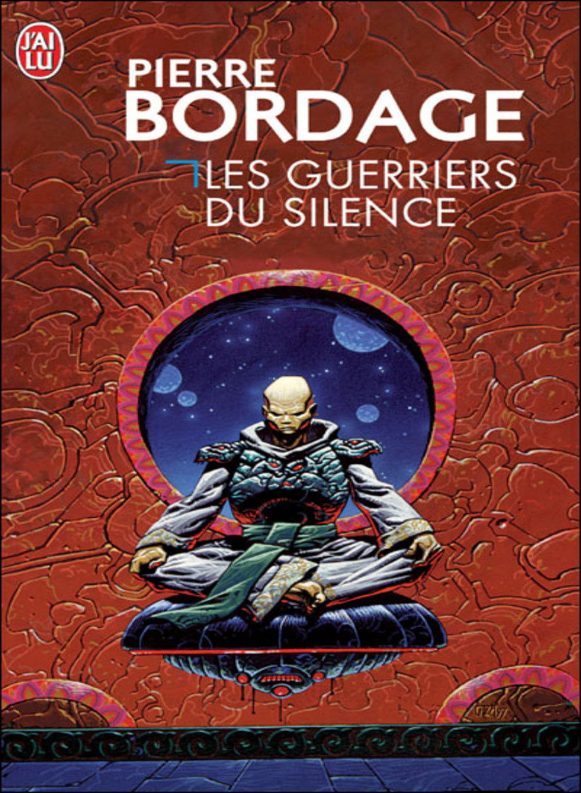

My favorite books

|
Silmarillion, Written by J. R. R. TolkienThe Valar had attempted to fashion the world for Elves and Men, but Melkor continually destroyed their handiwork. After he destroyed the two lamps that illuminated the world, the Valar moved to Aman, a continent to the west of Middle-earth, where they established their home called Valinor, illuminated by Two Trees, and left Middle-earth to darkness and Melkor. When stars began to shine and the Elves awoke, the Valar fought Melkor to keep the Elves safe, defeated and captured Melkor and then invited the Elves to live in Aman. Many Elves travelled to Aman, while others refused and still others stopped along the way, including the Elves who later became the Sindar, ruled by the Elf King Thingol and Melian, a Maia. Of the three tribes that set out, all of the Vanyar and Noldor, and many of the Teleri reached Aman. |

|
Dune, Written by Frank HerbertIn the far future, humanity has eschewed advanced computers in favor of adapting their minds to be capable of extremely complex tasks. Much of this is enabled by the spice melange, which is only found on the planet Arrakis, a desert planet with only giant sandworms as its native lifeform. Melange improves general health, extends life and can bestow limited prescience, and its rarity makes it a form of currency in the planetary empire. Melange enables specially trained Mentats to perform mental computations, allows the Spacing Guild's Navigators to safely route faster-than-light travel between planets, and helps the Reverend Mothers of the matriarchal Bene Gesserit to access their Other Memory, the ego and experiences of their female ancestors. |
|  |
The Warriors of Silence, Written by Pierre BordageThe Confederation of Naflin comprises about a hundred worlds, amongst which can be found the sumptuous and elegant Syracusa. However, under the aegis of the reigning family, the mysterious Scaythes of Hyponeros from a distant world, gifted with troubling psychic powers, are masterminding a gigantic plot in which imposing a dictatorship in the Confederation is only part of a wider plan. Who, then, can stand up against them? The monk-warriors of the Absourate order? Or will they have to rely on an obscure employee in a travel agency, who is drowning his sorrows on the planet Two-Seasons? Because his life is turned upside-down the day a beautiful Syracusan woman who is being trailed, turns up on his doorstep. |